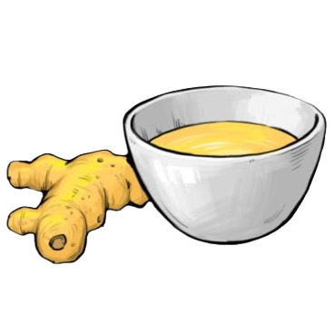
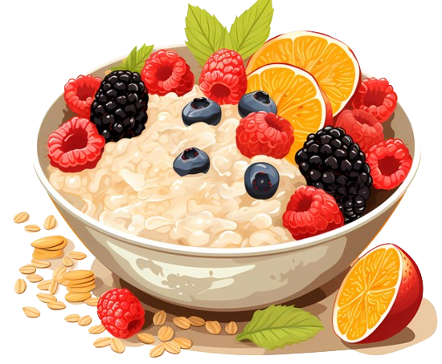
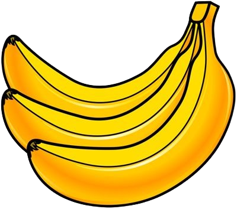
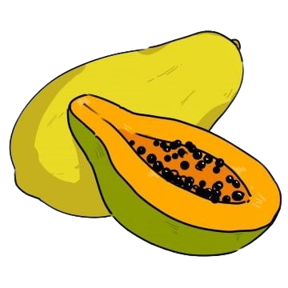
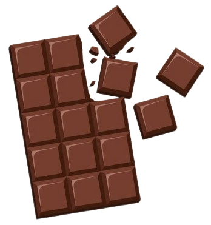
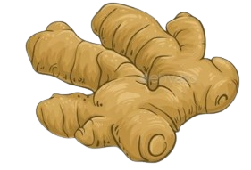

Home
Tracking
Wellness
Nutrition
Contact Us
Foods that can help you with cramps

Turmeric:
Contains curcumin, which helps reduce menstrual pain through its anti-inflammatory properties. It can be taken as a tea or supplement.

Oat meal:
A comforting source of fiber that can also help to maintain hormonal balances by keeping blood sugar levels stable.

Banana:
Rich in vitamins and an enzyme called papain, papaya helps regulate menstrual flow and reduces pain. It's commonly eaten fresh.

Papaya:
Rich in vitamins and an enzyme called papain, papaya helps regulate menstrual flow and reduces pain. It's commonly eaten fresh.

Dark Chocolate:
High in magnesium, dark chocolate can ease cramps and also acts as a mood booster.

Ginger:
Adding ginger to your diet can help reduce inflammation and pain. Ginger tea is particularly soothing during periods.